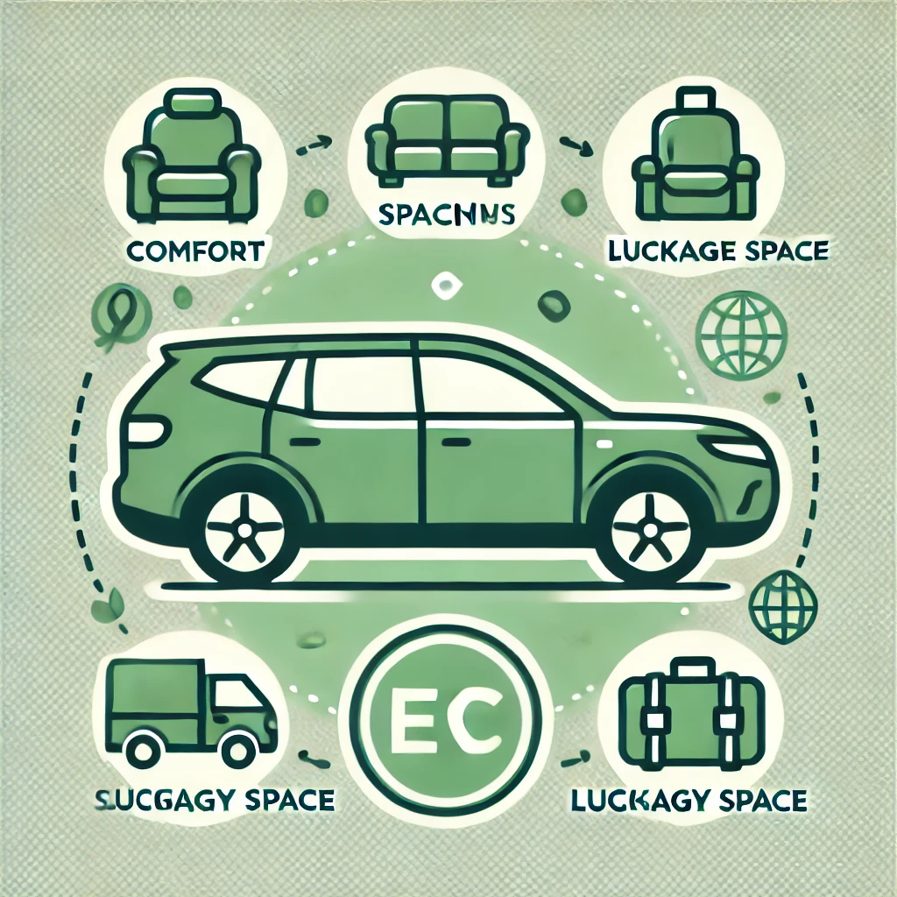

Cum să Alegi o Mașină Electrică?
Alegerea unei mașini electrice poate părea o provocare, având în vedere diversitatea de modele și specificații. Iată câteva criterii esențiale de care să ții cont pentru a face o alegere informată și potrivită stilului tău de viață.
1. Autonomia Bateriei
Autonomia este probabil cel mai important aspect de luat în considerare atunci când alegi un vehicul electric. În funcție de stilul tău de condus și de distanțele parcurse zilnic, vei dori un model care să ofere o autonomie suficientă pentru a acoperi nevoile tale.
Naveta zilnică scurtă:
Dacă folosești mașina doar pentru deplasări scurte, modelele cu o autonomie de 200-300 km pot fi suficiente.Călătorii lungi frecvente:
Dacă planifici călătorii lungi sau drumuri regulate între orașe, caută modele cu o autonomie de peste 400-500 km. Acestea îți permit să reduci numărul opririlor pentru încărcare, mai ales dacă infrastructura de stații rapide nu este bine dezvoltată pe rutele tale.
!Autonomia reală poate fi influențată de factori precum stilul de condus, vremea, încărcătura vehiculului și chiar utilizarea funcțiilor auxiliare (climatizare, încălzire).
2. Infrastructura de Încărcare
Asigură-te că ai acces la infrastructura de încărcare necesară pentru vehiculul tău electric. În funcție de zona în care locuiești și călătorești, accesul la stații de încărcare poate varia.
Încărcarea la domiciliu:
Dacă locuiești la casă sau ai acces la o parcare privată, instalarea unei stații de încărcare acasă poate fi cea mai convenabilă soluție. Încărcarea acasă este, de regulă, mai lentă, dar poate acoperi cu ușurință necesitățile de zi cu zi.Stații de încărcare rapidă:
Dacă nu ai acces la o stație acasă, verifică rețeaua de stații publice de încărcare rapidă din zona ta. Încărcarea rapidă îți poate aduce bateria la un nivel optim în mai puțin de o oră, fiind utilă mai ales pentru drumurile lungi.Disponibilitatea rețelei în zonele de tranzit:
Dacă planifici călătorii frecvente, verifică rețeaua de stații de-a lungul rutelor tale. Alege o mașină care are compatibilitate cu majoritatea stațiilor de încărcare disponibile.
3. Bugetul și Costul de Întreținere
Mașinile electrice pot fi mai costisitoare decât cele convenționale în ceea ce privește prețul de achiziție, dar acestea oferă economii semnificative pe termen lung.
Costul inițial și subvențiile:
Deși prețul de achiziție poate fi mai ridicat, verifică dacă există subvenții guvernamentale sau reduceri pentru vehicule electrice. În multe țări, aceste stimulente financiare pot reduce semnificativ costul final al unui EV.Întreținerea și piesele de schimb:
Vehiculele electrice au mai puține piese în mișcare decât cele pe combustie, ceea ce înseamnă costuri mai mici pentru întreținere. De exemplu, nu mai este nevoie de schimburi de ulei sau de întreținerea sistemului de evacuare. Cu toate acestea, ar trebui să iei în considerare costurile înlocuirii bateriei, chiar dacă aceasta are o durată lungă de viață.Costurile energiei:
Încărcarea electrică este, de regulă, mai ieftină decât combustibilul fosil, dar este bine să verifici prețurile energiei electrice din zona ta. Acestea pot varia, mai ales dacă optezi pentru încărcare rapidă la stațiile publice.
4. Spațiu și Confort
Mașinile electrice vin într-o gamă variată de mărimi și forme, de la hatchback-uri compacte până la SUV-uri spațioase și luxuriante. Alege un model care să răspundă nevoilor tale zilnice de spațiu și confort.
Numărul de pasageri și spațiul de depozitare:
Dacă ai o familie numeroasă sau obișnuiești să călătorești cu mulți pasageri, un SUV electric sau un crossover va fi probabil o alegere mai potrivită. De asemenea, dacă ai nevoie de spațiu de depozitare suplimentar, caută modele cu portbagaj spațios și opțiuni de rabatare a banchetelor.Confortul la condus:
Mulți producători de EV-uri oferă funcții premium, cum ar fi scaune încălzite, asistență la parcare, și tehnologii avansate de infotainment. Verifică dacă dotările sunt potrivite pentru nevoile și preferințele tale, în special pentru drumurile lungi.
